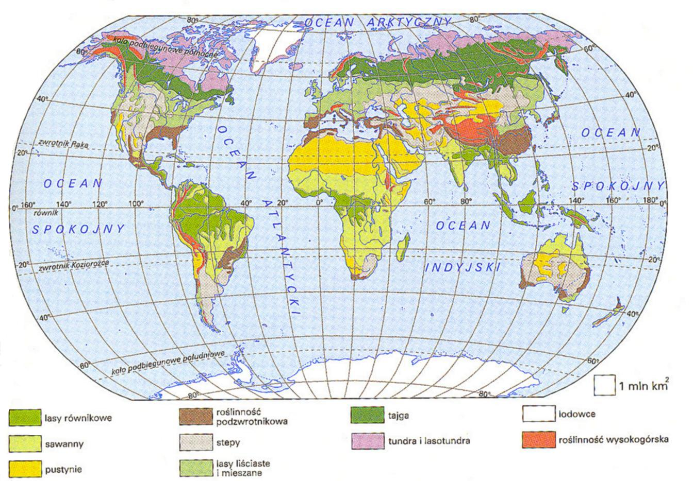

Czym jest biom?Tym pojęciem określamy rozległy obszar o określonym klimacie oraz ekosystemach na nim występujących. Taki sam biom może więc występować na różnych kontynentach, wtedy gatunki zwierząt i roślin nie powtarzają się, jednak mają takie same przystosowania do warunków środowiskowych i klimatycznych (np. budowa, barwa maskująca, sposób zdobywania pożywienia). W najbardziej podstawowy sposób biomy dzielimy na wodne i lądowe. Bardziej szczegółowy jest podział ze względu na strefowość: Na kuli ziemskiej wyróżniamy dziewięć podstawowych biomów. Są to:  |